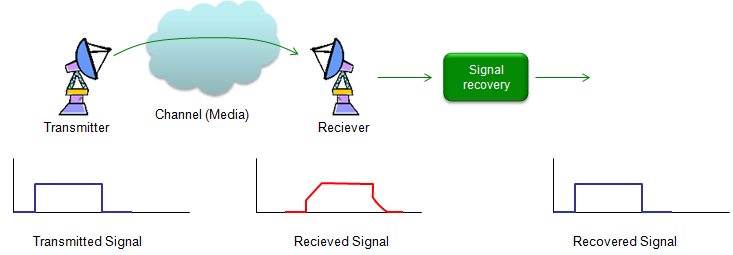
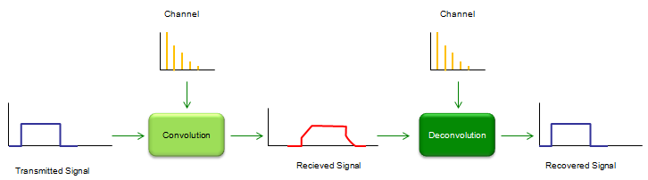
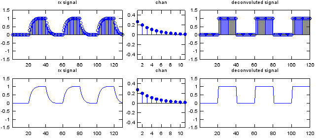
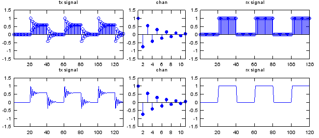

|
Communication - Deconvolution Home : www.sharetechnote.com |
|
As you may guess from the word itself, deconvolution is 'de' - 'convolution', meaning 'undo convolution'. As I mentioned in Overview page, the transmitted signal always get distorted as it go through a channel and the reciever gets the distorted signal. The mechanism of the distortion can be modeled by a mathematical technique called 'Convolution'. If the degree of the distortion is not so serious, we don't have to worry about it and with just a little bit of additional care for reciever design, we can decode signal without any error. But in reality the level of distortion tend to be greater than we hope. Then what we can do to decode the received signal (distorted signal) properly ? One possible solution would be as shown below.

Let's assume that we have the distorted signal as shown above (red line) and the level of distortion is too serious. If we can design a special 'Signal recovery' box that can recover the original signal (undistorted signal) from the distorted signal, it would solve our problem. One of this 'Signal Recovery' technique is 'Deconvolution'. As you see the illustration below, the distorted signal is created by the convolution of the transmitted signal and channel impulse response. The original signal (undistorted signal) can be recovered by the deconvolution of the recieved signal and channel impulse response. There is a very important thing that you have to notice. As you see in the illustration, we have to know the impulse response (charateristic information) of the channel in order to recover the signal by deconvolution. So characterizing a channel (estimating a channel) is also very important part of communication technology. If the channel characteristic does not change (static), we can get the characteristics in those methods explained in impulse response section, but if the channel characteristics changes dynamically we need another special technique called 'channel estimation'. (I will cover on this later in a separate section).

Here goes a couple of examples for deconvolution. Basically it is about the same channel that I used in convolution example. Starting with the distorted signal first and deconvolute the distorted signal with the same channel and get the recovered signal. Just playing with this code would be better than my explanation.
x = [0 1 0 1 0 1];
sf = 20; % samples per bit p_x = x;
if sf > 1 for i = 2:sf p_x= [p_x ; x]; end
p_x = reshape(p_x,[],1); end
a = 0.5; t = 0:10; k = 0.3; chan = 0.5*exp(-k*t); % this is to create the characteristic response (impulse response) of a channel chan = chan/sum(chan);
w = conv(p_x,chan); % this create the distorted signal by convoluting the original signal and the channel y = deconv(w,chan); % this recovers the original signal by decovoluting the distorted signal and the channel
subplot(2,5,[1 2]);stem(w);axis([1 length(w) -1.5 1.5]);title("rx signal"); subplot(2,5,3);stem(chan,'MarkerFaceColor',[0 0 1]);axis([1 length(chan) -0.5 0.5]);title("chan"); subplot(2,5,[4 5]);stem(y);axis([1 length(y) -1.5 1.5]);title("deconvoluted signal"); subplot(2,5,[6 7]);plot(w);axis([1 length(w) -1.5 1.5]);title("rx signal"); subplot(2,5,8);stem(chan,'MarkerFaceColor',[0 0 1]);axis([1 length(chan) -0.5 0.5]);title("chan"); subplot(2,5,[9 10]);plot(y);axis([1 length(y) -1.5 1.5]);title("deconvoluted signal");

x = [0 1 0 1 0 1]; sf = 20; % samples per bit
p_x = x; if sf > 1 for i = 2:sf p_x= [p_x ; x]; end
p_x = reshape(p_x,[],1); end
a = 0.5; t = 0:10; k = 0.3; chan = 0.5*exp(-k*t).*cos(pi*t); chan = chan; chan = chan/chan(1);
w = conv(p_x,chan); y = deconv(p_w,w);
subplot(2,5,[1 2]);stem(w);axis([1 length(w) -1.5 1.5]);title("tx signal"); subplot(2,5,3);stem(chan,'MarkerFaceColor',[0 0 1]);axis([1 length(chan) -1.5 1.5]);title("chan"); subplot(2,5,[4 5]);stem(y);axis([1 length(y) -1.5 1.5]);title("rx signal"); subplot(2,5,[6 7]);plot(w);axis([1 length(w) -1.5 1.5]);title("tx signal"); subplot(2,5,8);stem(chan,'MarkerFaceColor',[0 0 1]);axis([1 length(chan) -1.5 1.5]);title("chan"); subplot(2,5,[9 10]);plot(y);axis([1 length(y) -1.5 1.5]);title("rx signal");

|